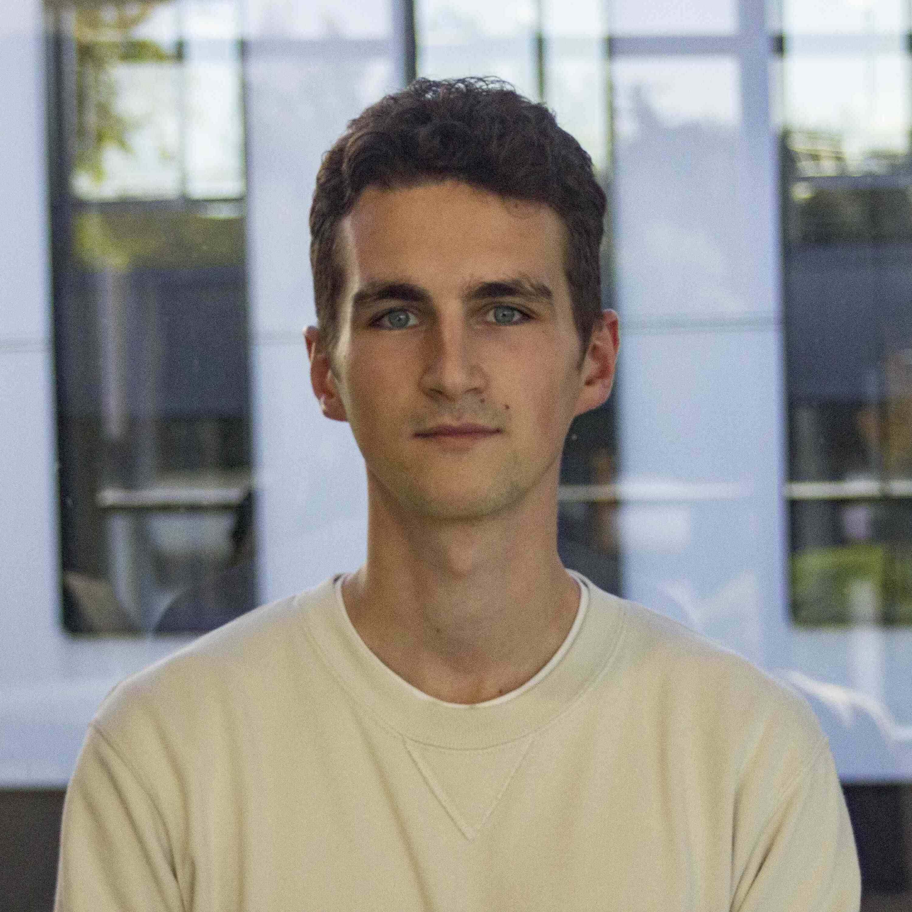
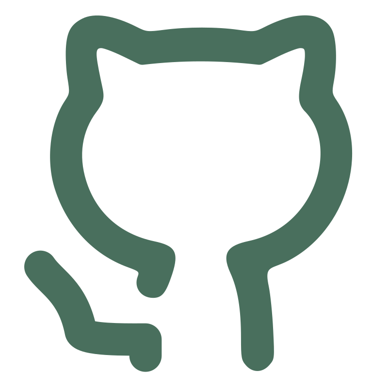
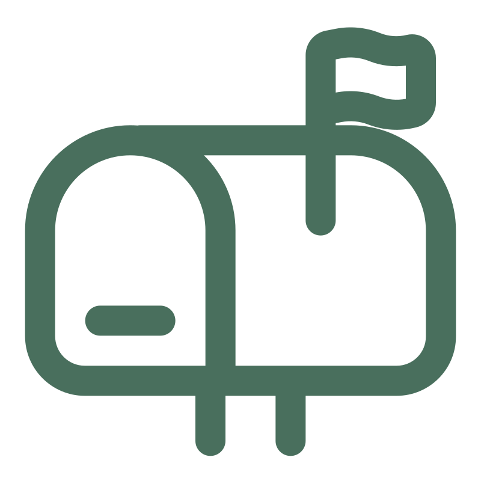

Github
foobarberis@gmail.comPassionné par les technologies et la programmation, je suis actuellement en formation pour devenir architecte en technologie du numérique à 42 Lyon. Fort de mon parcours atypique, alliant une formation en philosophie, un diplôme de menuisier et une expérience dans le service public, j'ai développé une approche analytique et pragmatique des projets techniques.
Vous pouvez retrouver la liste complète de mes projets sur mon portfolio en ligne.
Accueillir et renseigner les patients et prendre les rendez-vous.
Administration de la vie scolaire, accompagnement des élèves et enseignement au sein de la « Mission de lutte contre le décrochage scolaire ».
Pose et fabrication d'ouvrages de menuiserie pour des particuliers.
Initiation à la pêche en direction de différents publics (scolaires, centres de loisir, particuliers, personnes handicapées).